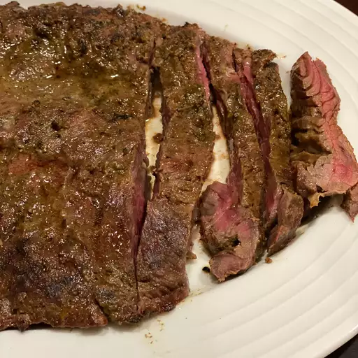

Steak

Description
While it did make for some extremely tasty Asian-style lettuce wraps, you can
use flap meat in so many other wonderful ways. You should try this in tacos or
Philly cheese steak. I used the grilled meat with lettuce, carrots, red
onions, chopped peanuts, and cilantro leaves to make a salad. For the dressing
I combined the reserved meat juices, sambal, fish sauce, and rice vinegar to
taste. I didn't measure anything, and neither should you.
Ingredients
- 2 tablespoons green curry paste
- 2 tablespoons fish sauce, or more to taste
- 2 tablespoons rice vinegar, or more to taste
- 2 tablespoons coconut milk
- freshly ground black pepper to taste
- 1 pinch cayenne pepper, or more to taste
- 1 pinch salt
- 2 pounds flap steak, trimmed of fat
Directions
-
Whisk curry paste, fish sauce, rice vinegar, coconut milk, black pepper,
cayenne pepper, and salt together in a large shallow glass or ceramic bowl.
Add the flap steak and turn to evenly coat. Cover the bowl with plastic wrap
and marinate in the refrigerator for 4 to 12 hours.
-
Remove the flap meat from the marinade and shake off excess. Discard
remaining marinade.
- Preheat an outdoor grill for high heat and lightly oil the grate.
-
Cook flap steak on the preheated grill until it starts to firm and is
reddish-pink and juicy in the center, 2 to 3 minutes per side. An
instant-read thermometer inserted into the center should read 130 degrees F
(54 degrees C). Transfer meat to a plate to rest for at least five minutes
before slicing against the grain.